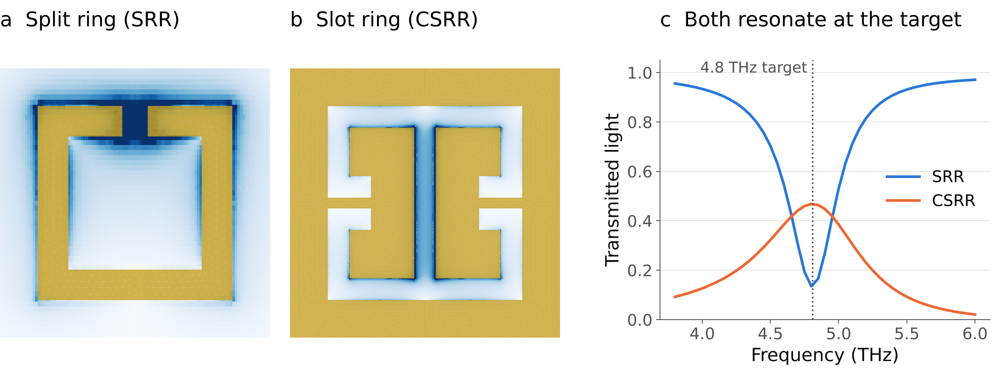
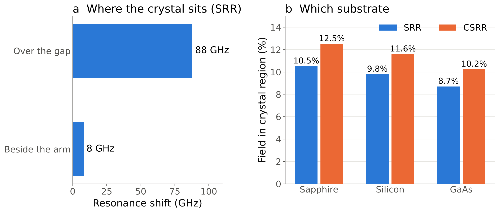

Terahertz resonators for coupling to the NbOCl₂ ferron
We design gold resonators that trap terahertz light at 4.8 THz, the frequency of the ferron (a collective lattice vibration) in the crystal NbOCl₂. The more of the resonator's field that reaches the crystal, the more strongly light and crystal interact.
Goal
Couple terahertz light strongly to the NbOCl₂ crystal at 4.8 THz.
Status
Two resonator designs simulated near the 4.8 THz target; the crystal goes over the gap; silicon or sapphire both work.
Next
Add the crystal to both designs and compute the coupling strength.
Two designs, explored side by side
We are developing two complementary resonators in parallel: a split ring (SRR), a gold ring with one gap, and a slot ring (CSRR), the inverse pattern cut as slots into a gold sheet. For each design we:
size the pattern so it resonates at 4.8 THz;
map where its electric field is strongest;
decide where the crystal should sit and which substrate to use.

Figure 1. The two designs. (a, b) Electric field (darker blue is stronger) over each gold pattern at resonance: the split ring concentrates it in its single gap; the slot ring spreads it along its slots. (c) Both resonate at the 4.8 THz target.
What we found
Put the crystal over the gap (Fig. 2a). On the split ring, the same piece of crystal shifts the resonance about ten times more when it sits over the gap (88 GHz) than beside the arm (8 GHz).
Silicon is a good substrate choice (Fig. 2b). Versus sapphire, silicon needs a ~4% smaller pattern, keeps the same resonance sharpness, and weakens the coupling by only ~3–4%. GaAs is the weakest option.
The slot ring reaches the crystal more. It places 12.6% of its field in the crystal region on sapphire, against 10.7% for the split ring.

Figure 2. (a) Resonance shift caused by the same small, higher-index patch placed over the gap or beside the arm of the split ring. (b) Share of the electric field inside the crystal region for both designs, each resized to 4.8 THz on three substrates.
Next steps
Add the NbOCl₂ crystal and its ferron to both designs and compute the coupling strength.
Choose between the split ring and the slot ring, and provide fabrication dimensions.
Fabricate and measure, and compare with the simulations.